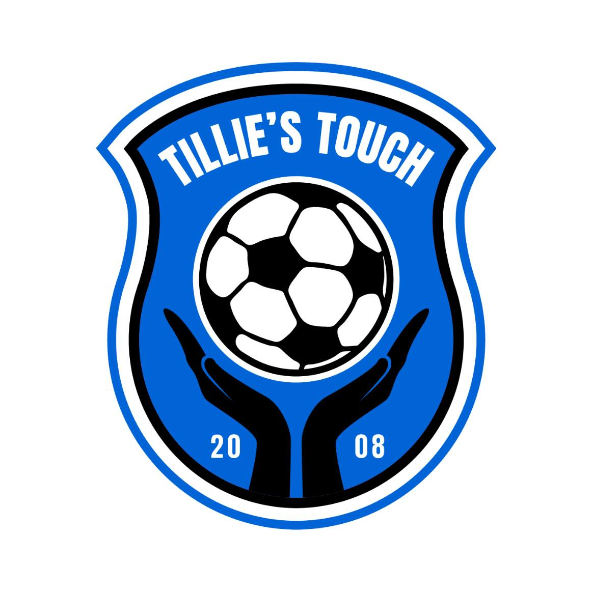

The starters of the soccer club. The person in the middle is Dale Johson the founder of Tillie's Touch and the girl in the photo is his daught Abby Johson. She as well played for Tillie's Touch. The boys in the photo played for Tillie's Touch in their youth> Most of them to this day are still coming to support Tillie's Touch. These boys grow up and are now leading their lives to the best of their abilities with good education and jobs as well.